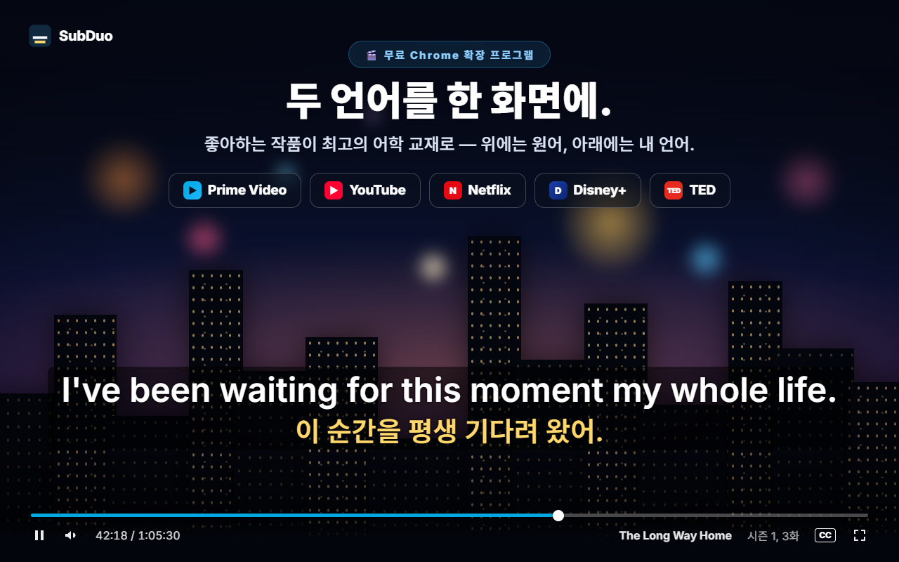
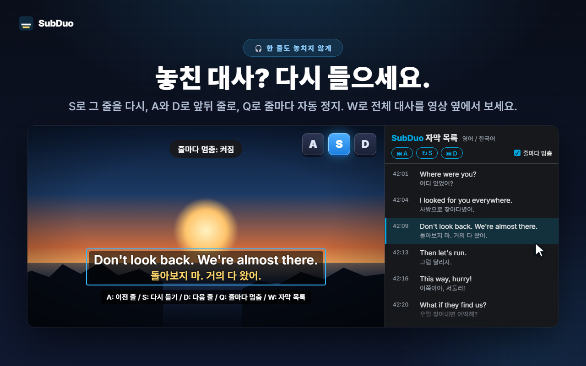
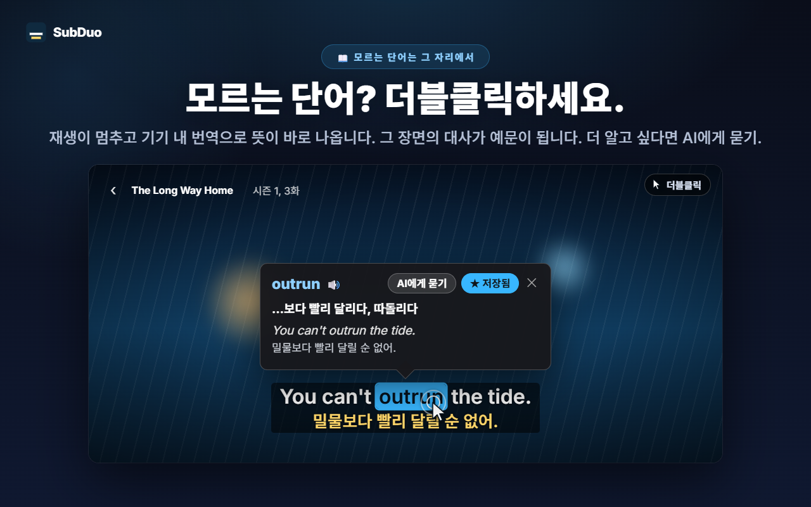
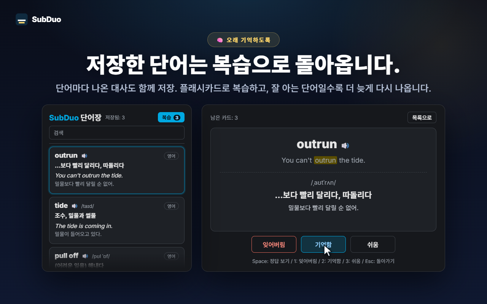

원하는 두 자막 언어
영상을 재생하면 사이트가 제공하는 모든 자막 트랙을 감지합니다. YouTube 자동 생성 자막도 포함됩니다. 줄마다 한 언어를 고르거나 한 줄을 숨길 수 있습니다.
SubDuo는 두 언어의 자막을 동시에 보여 줍니다. 위에는 원어, 아래에는 한국어. 단어를 더블클릭하면 뜻이 나오고, 키 하나로 대사를 다시 듣고, 배운 단어는 내장 단어장에 모아 둘 수 있습니다.
각 사이트에 있는 자막을 그대로 사용 · 계정 불필요 · 자막은 브라우저 안에서만 처리
스트리밍 플레이어는 자막을 한 번에 한 언어만 보여 줍니다. SubDuo는 언어를 하나 더하고, 그 자막으로 배울 수 있는 도구까지 갖췄습니다.
확장 프로그램의 실제 화면을 한국어로 보여 드립니다.

작품이 제공하는 자막 트랙 중 원하는 두 가지를 고르세요. 위에는 원어, 아래에는 한국어. 자막은 원하는 곳으로 드래그하고, 줄 위에서 휠을 굴려 크기를 바꾸고, 오른쪽 클릭으로 색상·투명도·흐리게를 설정할 수 있습니다.

S로 그 줄을 다시 듣고, A와 D로 이전·다음 줄로 이동하고, Q로 줄마다 자동으로 멈춥니다. W를 누르면 Chrome 사이드 패널에 자막 목록이 열려 두 언어를 한 줄씩 볼 수 있고, 행을 클릭하면 그 장면으로 이동합니다.

영상이 멈추고 카드에 뜻이 바로 나타납니다. Chrome 내장 번역기가 기기에서 번역하고, 그 장면의 대사가 예문이 됩니다. Alt+드래그로 구절을 선택할 수 있습니다. ‘AI에게 묻기’를 누르면 문맥에 맞는 뜻, 발음, 예문을 볼 수 있습니다.

저장한 단어마다 나온 대사가 함께 남습니다. 단어장에서 검색·필터·발음 재생을 하고, 플래시카드로 복습하세요. 잘 아는 단어일수록 더 오래 지나서 다시 나옵니다.
계정도, 설정 화면도 없습니다. 설치하고 재생만 하세요.
Chrome 웹 스토어에서 SubDuo를 설치한 뒤 Prime Video, YouTube, Netflix, Disney+, TED에서 영상을 재생하세요.
SubDuo 아이콘을 클릭하고 위 줄과 아래 줄에 쓸 자막 언어를 하나씩 고르세요. 작품에 있는 자막만 목록에 나옵니다.
단어를 더블클릭해 뜻을 찾고, A, S, D로 대사를 다시 듣고, 단어장은 팝업에서 여세요.
보면서 배우는 사람을 위해 만들었습니다. 필요할 때까지 자막은 방해가 되지 않습니다.
영상을 재생하면 사이트가 제공하는 모든 자막 트랙을 감지합니다. YouTube 자동 생성 자막도 포함됩니다. 줄마다 한 언어를 고르거나 한 줄을 숨길 수 있습니다.
단어를 더블클릭하거나 Alt+클릭, 구절은 Alt+드래그. 재생이 멈추고 기기에서 번역한 뜻이 영상 위에 표시됩니다.
문맥에 맞는 뜻, 발음, 예문을 표시 언어로 알려 줍니다. 하루 20회까지 무료입니다.
클릭 한 번으로 단어를 저장하고, 검색하고, 언어별로 거르고, 🔊로 발음을 들으세요. 플래시카드는 이미 아는 단어일수록 간격을 넓혀 줍니다.
A는 이전 줄, S는 다시 듣기, D는 다음 줄. Q를 누르면 줄마다 멈춥니다. 한 줄을 흐리게 해 실력을 시험하고, 마우스를 올려 정답을 확인하세요.
모든 대사를 두 언어로 영상 옆에 보여 줍니다. 현재 줄이 강조되고, 행을 클릭하면 그 장면으로 이동합니다. W로 엽니다.
드래그로 이동, 휠로 줄별 크기 조절, 방향키로 미세 조정, 왼쪽·가운데·오른쪽 정렬. 오른쪽 클릭으로 줄마다 색상, 투명도, 흐리게를 설정합니다.
YouTube에서는 크게, Netflix에서는 은은하게. 설정은 사이트별로 저장되고 Chrome으로 동기화됩니다.
메뉴, 번역, AI 설명이 선택한 표시 언어로 나옵니다. Chrome 언어와 다르게 설정할 수 있습니다.
SubDuo는 각 사이트가 이미 브라우저로 보내는 자막 파일을 읽어 브라우저 안에서 그립니다. 외부로 보내는 것은 AI에게 묻기로 선택한 구절과 그 자막 줄뿐입니다.
자막은 브라우저 안에서 해석하고 그립니다. 설정, 단어장, 시청 기록은 개발자에게 전송되지 않습니다. 단어 번역은 Chrome 내장 번역기로 기기에서 실행됩니다.
‘AI에게 묻기’를 누르면 선택한 구절, 그 자막 줄과 화면의 다른 줄, 언어 코드, 하루 한도 관리를 위한 무작위 기기 식별자가 SubDuo 서버로 전송되고, 서버가 OpenAI에 설명을 요청합니다. 서비스 운영을 위해 IP 주소가 처리됩니다.
가입할 것이 없습니다. 확장 프로그램에는 광고도 분석 도구도 없습니다.
“storage”는 설정과 단어장, “scripting”은 업데이트 후 열린 탭 재연결, “sidePanel”은 자막 목록에 쓰이며, 지원하는 사이트 5곳에만 접근합니다.
Chrome 웹 스토어에서 몇 초 만에 설치